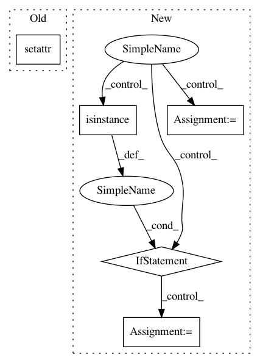

10d7ece1c34c5533262a54d20d974a3d04f0b7ce,src/sdk/pynni/nni/compression/tensorflow/compressor.py,,_instrument_model,#Any#Any#,289
Before Change
cur = getattr(cur, name)[index]
key = wrapper.layer_info.path[-1]
if isinstance(key, str):
setattr(cur, key, wrapper)
else:
name, index = key
getattr(cur, name)[index] = wrapper
//if isinstance(cur, tf.keras.Sequential):
After Change
def _instrument_model(self, model):
for key, value in list(model.__dict__.items()): // avoid "dictionary keys changed during iteration"
if isinstance(value, tf.keras.layers.Layer):
new_layer = self._instrument(value)
if new_layer is not value:
setattr(model, key, new_layer)
elif isinstance(value, list):
for i, item in enumerate(value):
if isinstance(item, tf.keras.layers.Layer):
value[i] = self._instrument(item)
return model
def _select_config(self, layer):
In pattern: SUPERPATTERN
Frequency: 3
Non-data size: 5
Instances
Project Name: Microsoft/nni
Commit Name: 10d7ece1c34c5533262a54d20d974a3d04f0b7ce
Time: 2020-09-15
Author: 40699903+liuzhe-lz@users.noreply.github.com
File Name: src/sdk/pynni/nni/compression/tensorflow/compressor.py
Class Name:
Method Name: _instrument_model
Project Name: biolab/orange3
Commit Name: c073de4002f7a72babc8fd6ecdcd90c141be2c08
Time: 2013-01-21
Author: janez.demsar@fri.uni-lj.si
File Name: Orange/widgets/utils/datacaching.py
Class Name:
Method Name: getCached
Project Name: SheffieldML/GPy
Commit Name: 94c84a23a3d5c9e1ed93b40e5848a83cf791b83f
Time: 2014-05-16
Author: ibinbei@gmail.com
File Name: GPy/models/mrd.py
Class Name: MRD
Method Name: __init__